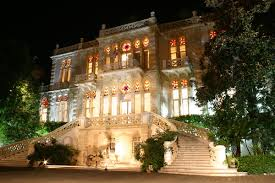
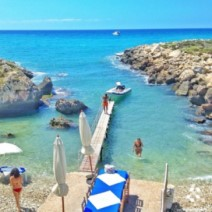
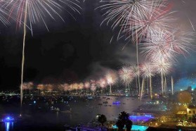

Lebanon is full of interesting things to do. As one of the oldest cities in the world, Beirut is rich with history and culture. In the day time, consider strolling through Roman Hippodrome Ruins off of France Street in Downtown Beirut. A short walk away are the Roman Baths off of Capuchin Street that were discovered in 1968. Beirut also provides a few museums to explore, such as the National Museum of Beirut, the Sursock Museum, and the American University of Beirut museum. Click here to view a list of possible museums to visit in Beirut.
The Mediterranean Sea provides an escape from the bustling city life, giving us a cool breeze and crystal blue waters. Although the public beaches are usually very overcrowded, many private resorts are offered that provide much cleaner beaches and better amenities.
Summer temperatures are moderate year round, providing adequate beach weather.
| Month | Temperature |
|---|---|
| May | 72 |
| June | 77 |
| July | 81 |
| Aug | 82 |
| Sept | 81 |
Beirut is known for its exciting nightlife. With several night clubs along the north-side of Beirut, and many restaurants near the city center, the city’s food and party atmosphere has attracted many tourists from around the world. There is something for everyone; many can walk along the boardwalk and look over to Pigeon Rock, eat at world-renowned restaurants along Zaitunay Bay, or attend music festivals in Jounieh or Batroun.
